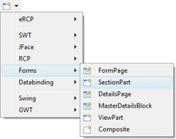
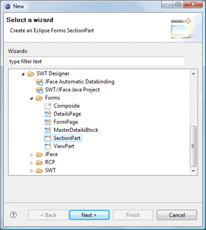
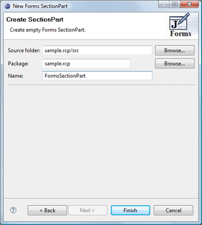

Forms SectionPart Wizard
|
Subclasses of the Eclipse Forms SectionPart class can be
created using the Forms SectionPart wizard. The wizard can be
selected from the drop down Designer wizard menu or from the
Eclipse New wizard.
To use the wizard, select the project source folder and package
to contain the class. Then enter the class name and hit the Finish
button.
For more information on using Eclipse Forms, see the Eclipse
Forms Programming Guide. |


The wizard generates the following code.
-
import
org.eclipse.swt.widgets.Composite;
import
org.eclipse.ui.forms.SectionPart;
import
org.eclipse.ui.forms.widgets.FormToolkit;
import
org.eclipse.ui.forms.widgets.Section;
public
class
FormsSectionPart
extends
SectionPart {
public
FormsSectionPart(Composite parent, FormToolkit toolkit, int style) {
super(parent,
toolkit, style);
createClient(getSection(), toolkit);
}
private
void
createClient(Section section, FormToolkit toolkit) {
section.setText("New
SectionPart");
Composite container =
toolkit.createComposite(section);
section.setClient(container);
}
}
When editing Eclipse Forms SectionParts, a set of specialized
Eclipse Forms widgets is available with their own unique widget palette.
These widgets provide the "flat" look that is a
signature element of the Eclipse Forms API. Standard
widgets and layout managers can also be used although they won't use the
flat look.
|